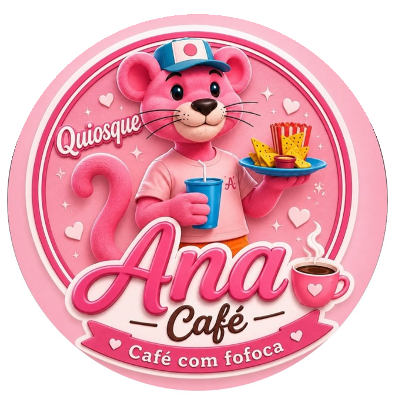

Bebidas quentes
- Café
- Café com leite
- Café preto
- Nescau
- Leite
café · lanches · vitaminas
No Quiosque Ana o cafezinho vem quentinho, o lanche vem caprichado e a mesa vira roda de conversa. Passa aqui, senta um pouco e fica por dentro de tudo.
Acreditando em Deus sempre 🙌

De segunda a sábado, em dois turnos — de manhã pro café e à tarde pra bater um papo.
Segunda a sábado · fechado aos domingos
“Aqui ninguém toma café sozinho. Senta, pede o de sempre e em cinco minutos já sabe as novidades da rua inteira.”
— o jeitinho do Quiosque Ana
Segue a gente pra ver o cardápio do dia, os bastidores e claro, a fofoca boa de sempre.
Quiosque Ana
Café com fofoca ☕💕
Segunda a sábado
6:30–11:30 e a partir das 17:00